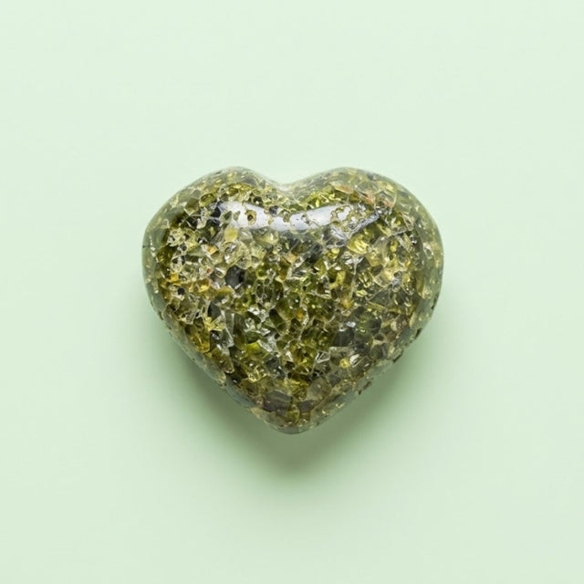
Epidoto in 4 forme
Crescita personale e intenzioni7,50 €

Lasciati incantare dalla bellezza magnetica dell'Ametista grezza, una gemma straordinaria che brilla con le sue inconfondibili sfumature dal lilla al viola intenso.
Custodita direttamente dalla terra nella sua forma più pura e naturale, questa pietra è da sempre il simbolo universale della calma interiore e della connessione spirituale.
Un pezzo unico e affascinante, ideale per purificare l'ambiente circostante e regalare un'atmosfera di profondo relax ai tuoi spazi.
I significati appartengono alla tradizione e non sostituiscono il parere di un medico.
Reso entro 14 giorni dalla ricezione
Ti mancano 44,00 € per la spedizione gratuita
Spedizione Express 5,90 €. Reso entro 14 giorni dalla ricezione, con spedizione del reso a tuo carico.
Dal grimorio
Sciogli il nastro per aprirlo, poi tocca una linguetta.Tocca una linguetta o sfoglia le pagine.
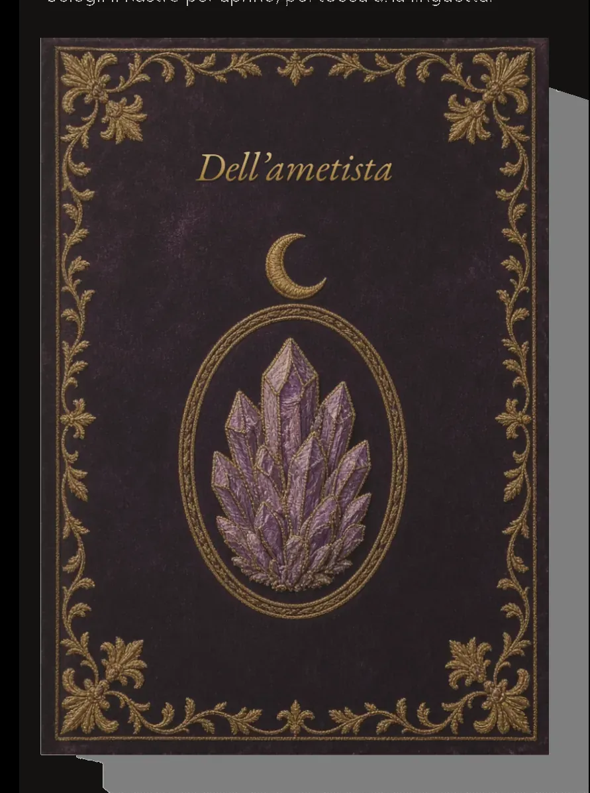
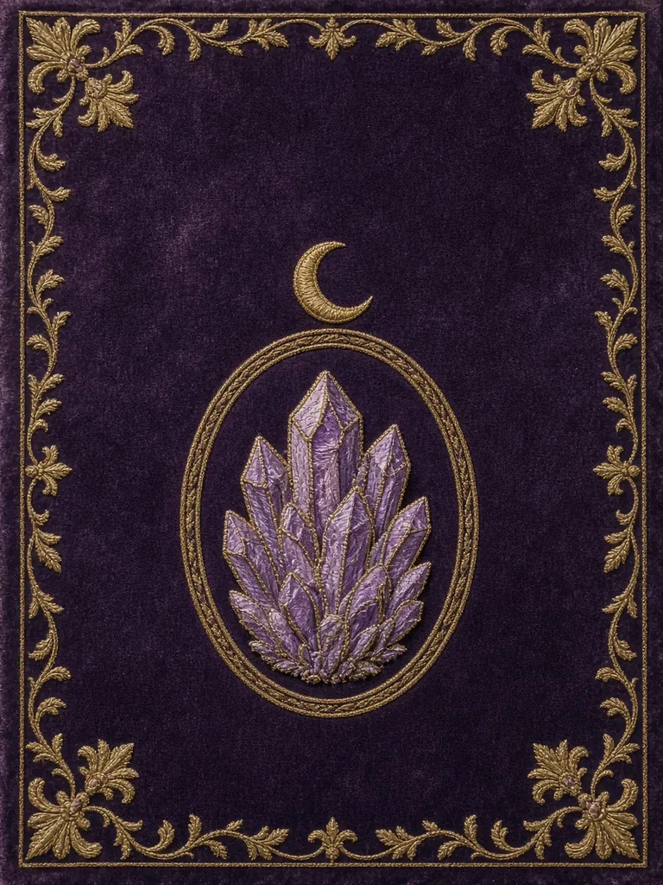
Libro delle pietre
Dell’ametista
quarzo viola, pietra di febbraio
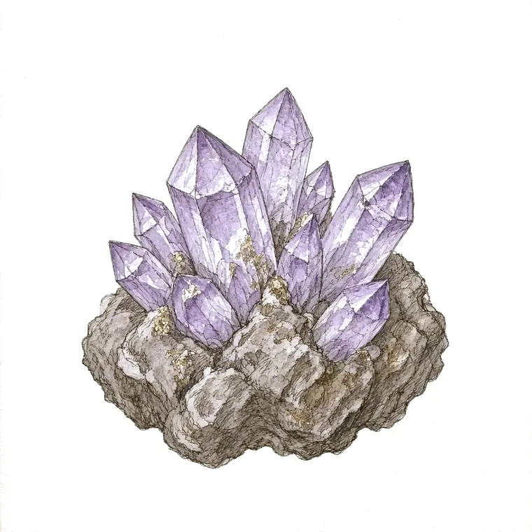
Origine · Nella tradizione
Come si usava · Si crede
Capitolo primo
L’ametista è un quarzo, parente stretto del cristallo di rocca. Il viola le viene da tracce di ferro rimaste nel cristallo mentre cresceva: poche, ma bastano a colorarlo dal lilla pallido al viola profondo.
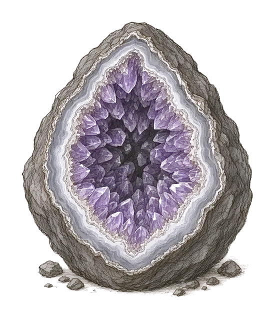
Tutto comincia con la lava. Raffreddandosi, la roccia vulcanica trattiene bolle di gas che lasciano cavità a forma di mandorla. In tempi lunghissimi l’acqua ricca di silice vi passa dentro e deposita strato su strato: prima le bande chiare dell’agata, poi i cristalli, con le punte rivolte verso il centro.
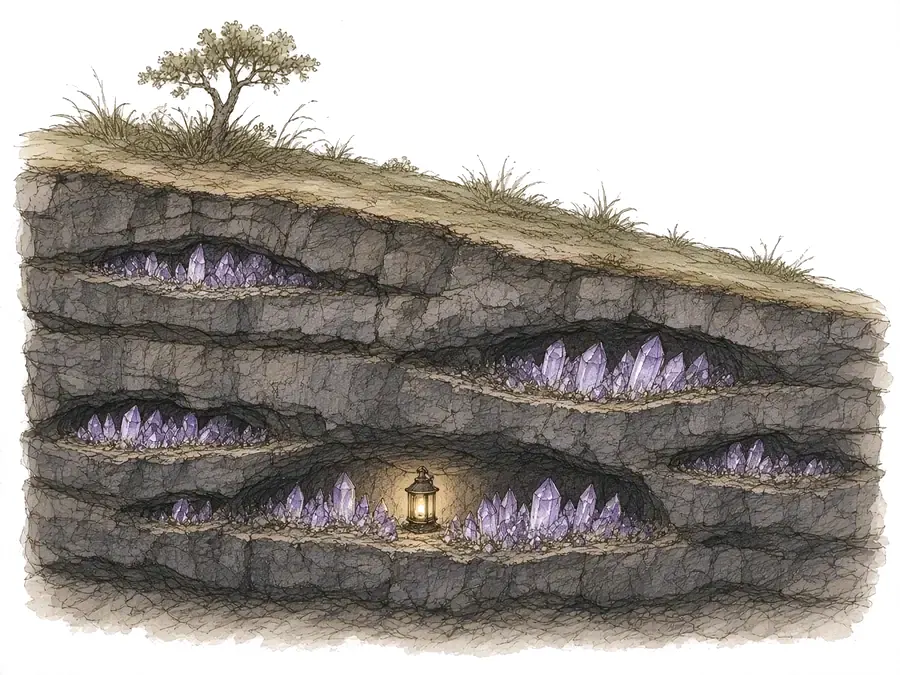
Il pezzo che ricevi è grezzo, di tre o quattro centimetri, con la sua matrice grigio-bruna.
Al sole forte, col tempo, il viola si schiarisce: meglio tenerla all’ombra.
Capitolo secondo
Il nome viene dal greco amethystos, «non ebbro». Nell’antichità si credeva che tenesse lontana l’ebbrezza: per questo la sua storia, da sempre, si intreccia con quella del vino.
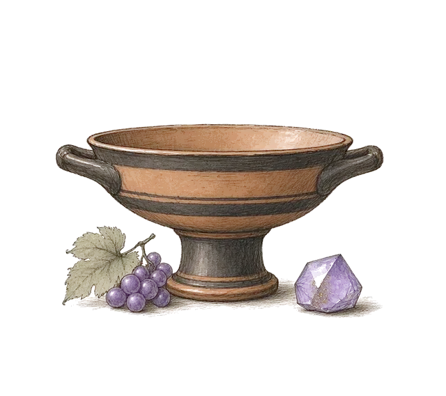
Una leggenda racconta di una ninfa di nome Ametista. Per salvarla da Bacco, la dea Diana la trasformò in un cristallo limpido. Il dio, pentito, versò sulla pietra il suo vino, e da allora quel cristallo è viola.
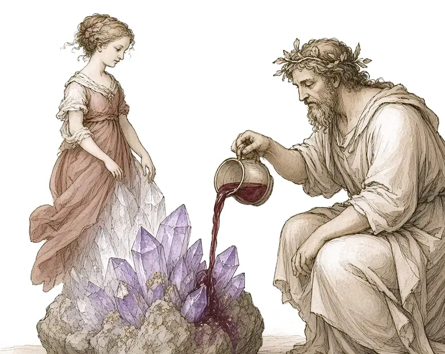
È una storia più giovane del nome, ma da secoli viaggia insieme alla pietra.
Nel Medioevo l’ametista veniva montata negli anelli dei vescovi, come segno di misura e sobrietà.
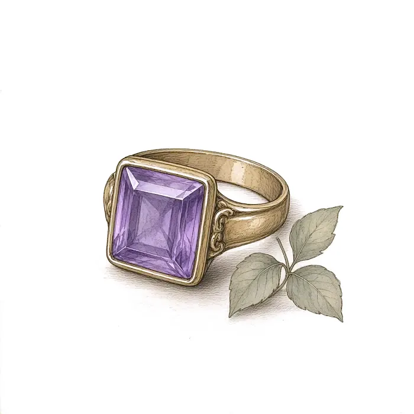
Oggi è la pietra di chi nasce a febbraio.
Capitolo terzo
Nella tradizione l’ametista si teneva vicino a dove si dorme: sotto il cuscino, sul comodino o in una ciotola accanto alla candela. Era la pietra della sera, da guardare prima di spegnere la luce.
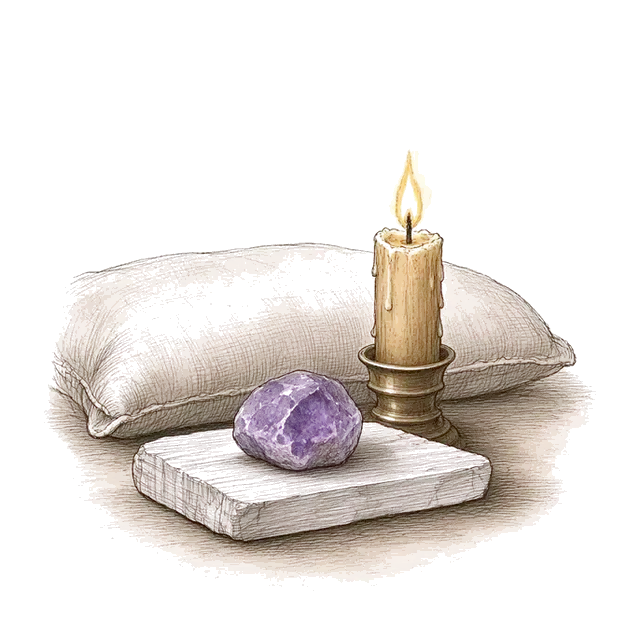
Chi medita la tiene nel palmo, a occhi chiusi, e lascia che il respiro rallenti. C’è chi la appoggia sulla fronte, tra le sopracciglia, per qualche minuto.
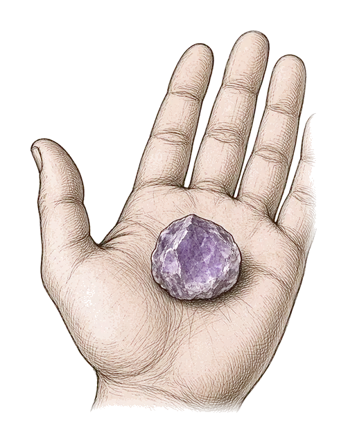
Non servono gesti complicati: bastano un momento di silenzio e la pietra in mano.
Nella tradizione si usa la mano sinistra, quella che riceve.
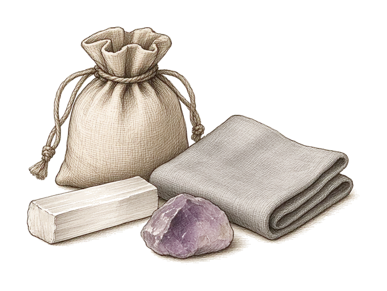
Capitolo quarto
Si crede che l’ametista aiuti a ritrovare quiete quando la mente è troppo piena, e che accompagni l’intuizione. Per questo è tra le pietre più usate da chi medita.
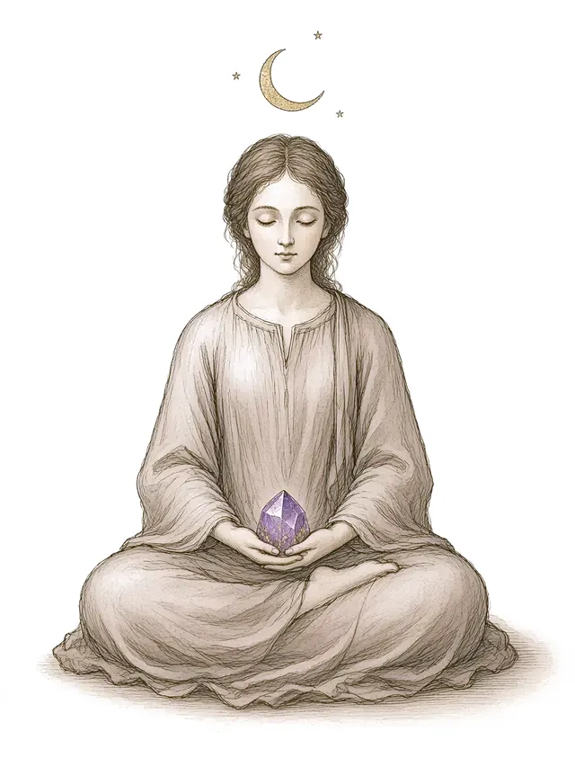
Nella tradizione dei chakra è legata al settimo, la corona, in cima alla testa, e al sesto, il terzo occhio, tra le sopracciglia.
Prima di usarla, molti la tengono tra le mani e le affidano un’intenzione semplice, detta a bassa voce.
Qui finisce il libro dell’ametista.
Due o tre pezzi che stanno bene con questo.

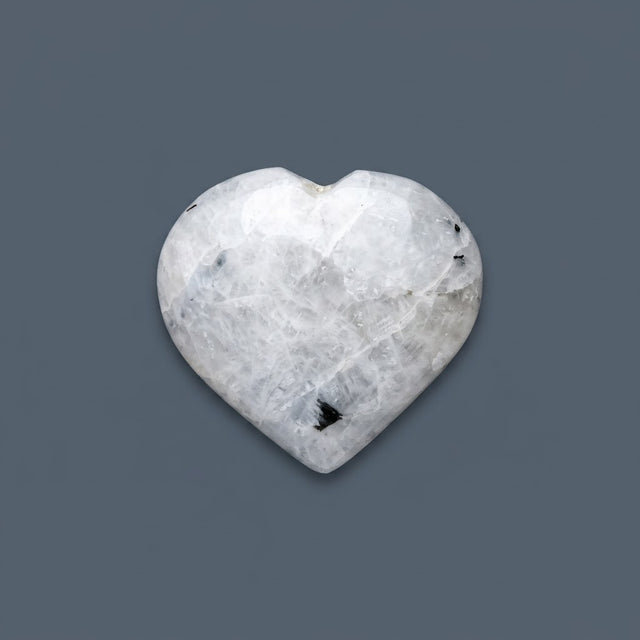
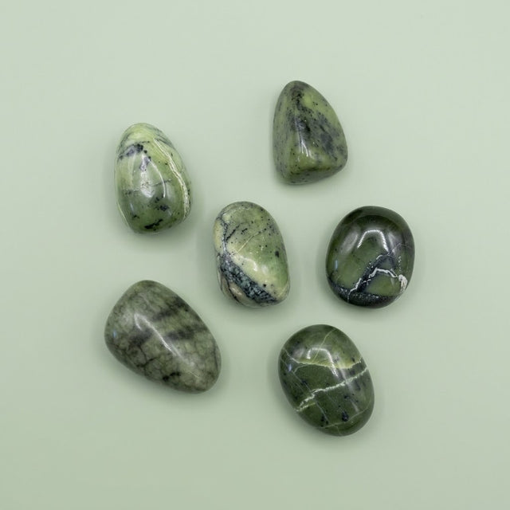
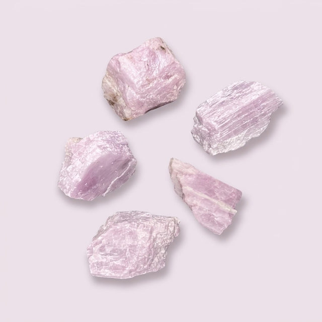
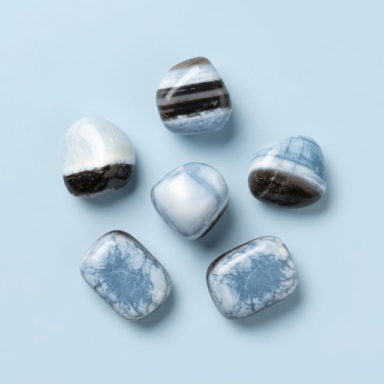